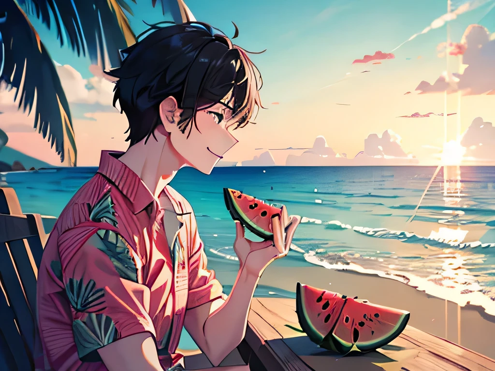
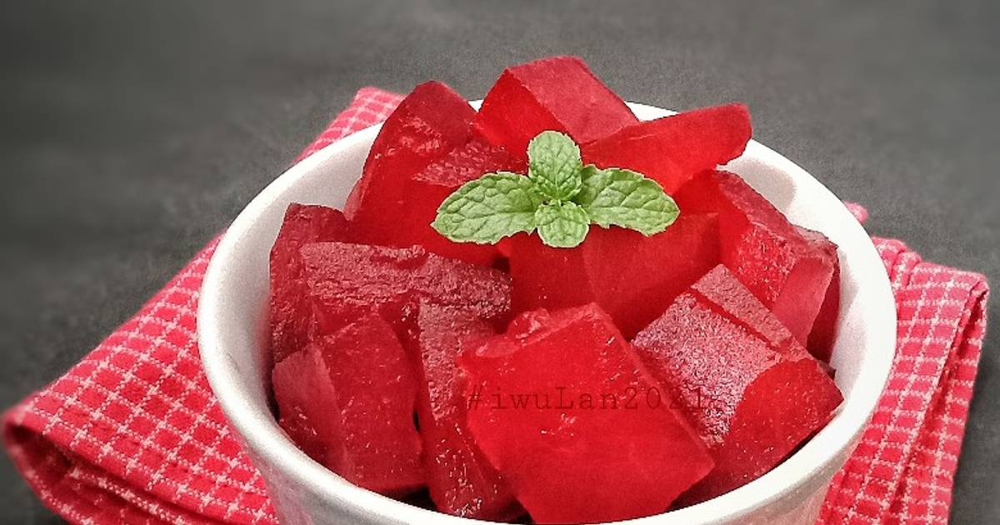
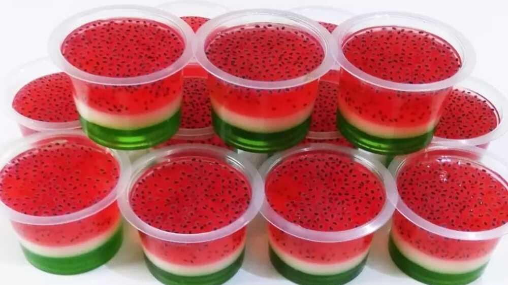
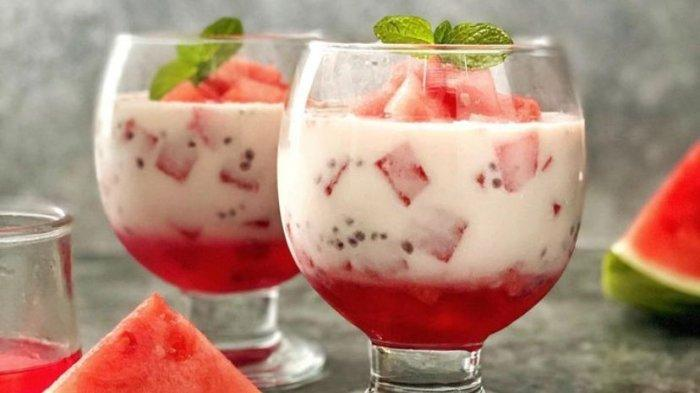

WATERMELON BOY
Watermelon Boy: Semangka Manis Pilihan, Segarnya Kebangetan! 🍉
Watermelon Boy hadir untuk memenuhi kebutuhan semangka segar dan manis pilihan Anda. Kami menyediakan berbagai jenis semangka berkualitas tinggi dengan harga terjangkau, langsung dari kebun petani lokal. Nikmati semangka merah dengan tekstur renyah dan kadar air tinggi yang menyegarkan, atau cicipi manisnya semangka kuning yang unik dan kaya akan vitamin. Selain buah segar, kami juga menyediakan aneka produk olahan semangka yang lezat dan inovatif, seperti jus semangka segar, es krim semangka, salad buah dengan potongan semangka, manisan semangka kering, hingga selai semangka yang nikmat. Dapatkan pengalaman menikmati semangka terbaik dengan layanan pesan antar yang cepat dan praktis, khusus untuk Anda. Watermelon Boy, teman setia dahaga Anda
Kenapa Harus Pilih Watermelon Boy?






- Semangka berkualitas tinggi: Kami hanya menjual semangka segar, matang sempurna, dan manis alami.
- Berbagai jenis semangka: Temukan berbagai varietas semangka, mulai dari semangka merah, kuning, hingga tanpa biji.
- Langsung dari petani lokal: Kami bekerja sama dengan petani lokal untuk memastikan kualitas dan kesegaran semangka.
- Harga terjangkau: Nikmati semangka berkualitas dengan harga bersahabat.
- Pengiriman cepat dan aman: Kami menjamin semangka sampai di tangan Anda dalam kondisi segar.
- Pelayanan ramah dan profesional: Kepuasan pelanggan adalah prioritas kami
Jawabannya sudah jelas karena kami memiliki :
- Semangka potong: Praktis dan siap santap, cocok untuk acara atau bekal.
- Jus semangka segar: Nikmati kesegaran semangka dalam bentuk jus yang menyehatkan.
Selain semangka utuh, kami juga menyediakan:
Kenapa Harus Pilih Watermelon Boy?
- Pesan Antar: Layanan pesan antar semangka segar langsung ke rumah pelanggan. Pastikan jangkauan pengiriman dan biaya antar yang jelas. Kamu bisa menawarkan gratis ongkir dengan minimal pembelian tertentu atau untuk area tertentu.
- Pre-order: Menerima pesanan semangka untuk acara khusus, seperti arisan, pesta ulang tahun, atau acara kantor. Pelanggan bisa memesan beberapa hari sebelumnya dengan jumlah dan jenis semangka yang diinginkan.
- Potong Sesuai Keinginan: Menawarkan jasa pemotongan semangka sesuai keinginan pelanggan, misalnya dipotong dadu, potong segitiga, atau dibentuk menjadi bola-bola. Ini akan sangat membantu untuk acara-acara tertentu.
- Bungkus Kado: Menyediakan layanan pembungkusan kado untuk semangka yang akan dijadikan hadiah. Gunakan kertas kado menarik dan pita cantik untuk menambah nilai estetika.
Jika anda melakukan pembelian Semangka disini, kami akan memberikan layanan yang terbaik kepada anda, seperti:
- Ukir Semangka: Menawarkan jasa ukir semangka dengan berbagai motif menarik. Layanan ini cocok untuk acara spesial seperti pernikahan atau ulang tahun.
- Keranjang Buah Semangka: Membuat kreasi keranjang buah dengan semangka sebagai fokus utama, dipadukan dengan buah-buahan segar lainnya. Cocok sebagai hadiah atau bingkisan
- Paket Semangka + Produk Olahan: Menawarkan paket semangka utuh atau potongan dengan produk olahan semangka seperti jus semangka, es semangka, atau manisan kulit semangka.
- Workshop/Demo: Mengadakan workshop atau demo tentang cara memilih semangka yang baik, cara memotong semangka dengan teknik tertentu, atau cara membuat kreasi olahan semangka.
Selain layanan di atas, kami juga memiliki beberapa layanan yang mungkin menarik bagi anda :
Produk-Produk Olahan Semangka
| Produk | Deskripsi | Harga |
|---|---|---|
| Jus Semangka | Dapatkan olahan jus semangka terbaik dari kami. Nikmati kesegaran jus semangka asli, kaya akan vitamin dan antioksidan. Dibuat dari semangka segar pilihan, tanpa tambahan gula, pewarna, dan pengawet. Rasakan manfaatnya untuk kesehatan tubuhmu!😍 | Rp. 12.000 |
| Eskrim Semangka | Nikmati es krim semangka dengan tekstur lembut dan rasa buah asli yang menyegarkan. Dibuat dari semangka segar pilihan, tanpa pemanis buatan, warna, dan pengawet. Gigitan pertama akan membawamu ke oasis di tengah teriknya hari! 🌴 | Rp. 8.000 |
| Manisan Kulit Semangka | Manisan Kulit Semangka, olahan kulit semangka dengan cita rasa manis dan tekstur kenyal yang bikin ketagihan! Diolah secara higienis dengan gula asli, tanpa pemanis buatan. Cocok untuk camilan sehat sehari-hari. 😋 | Rp. 15.000 |
| Pudding Semangka | "Lembut, manis, dan meleleh di mulut!" Rasakan sensasi segar Puding Semangka dengan tekstur yang lembut dan cita rasa semangka yang autentik. Sempurna untuk menyegarkan harimu! 🍮🍉 | Rp. 8000 |
| Semangka Susu Keju | "Manisnya semangka berpadu dengan gurihnya keju!" Semangka potong dengan siraman susu kental manis dan taburan keju parut. Camilan simple yang disukai semua usia. 🧀🍉 | Rp. 8000 |
| Smoothie Semangka | "Sehat dan menyegarkan dalam segelas!" Smoothie Semangka dengan campuran yoghurt, madu, dan es batu. Cocok untuk sarapan atau camilan sehat. 🥛🍉 | Rp. 15.000 |
| Paket semangka dan olahannya | Nikmati kesegaran semangka sekeluarga dengan paket lengkap kami! Isi paket termasuk semangka segar manis, jus semangka yang menyegarkan, es loli semangka yang menggemaskan, dan manisan kulit semangka yang unik. Sempurna untuk acara keluarga atau sekadar bersantai di rumah.💕 | Rp. 105.000 |
Layanan Tambahan
| Layanan | Deskripsi | Biaya Tambahan |
|---|---|---|
| Pesan Antar | Tidak sempat datang langsung ke toko kami? Tenang, nikmati layanan pesan antar kami dan dapatkan olahan semangka favoritmu langsung diantar ke tempatmu. Mudah, cepat, dan praktis! | Rp. 0 - 15.000 |
| Ukir Semangka | Buat acara spesialmu lebih berkesan dengan semangka ukir. Kami menyediakan berbagai macam bentuk ukiran yang menarik, mulai dari bentuk bunga, hewan, hingga karakter kartun. | Rp. 8.000 - 20.000 |
| Potong Semangka | Bingung memotong semangka yang besar? Kami siap membantu! Layanan potong semangka kami akan memotong semangka sesuai kebutuhanmu, baik bentuk dadu, potongan segitiga, atau bentuk lainnya. Praktis dan siap dinikmati! | Rp. 2.000 |
| Bungkus Kado | Berikan hadiah semangka yang unik dan menarik! Kami menyediakan layanan bungkus kado untuk semangka dengan berbagai pilihan kertas kado dan hiasan yang cantik. | Rp. 8.000-15.000 |
| Pre-Order | Ingin menikmati olahan semangka di lain waktu? Gunakan layanan pre-order kami. Pesan olahan semangka favoritmu dari sekarang dan tentukan waktu pengambilannya. | Rp. 0 |
| Workshop/Demo | Pelajari cara mengolah semangka menjadi berbagai hidangan lezat dan menarik! Ikuti workshop atau demo masak kami dan dapatkan tips & trik dari ahlinya. Cocok untuk acara keluarga, gathering, atau acara lainnya. | Rp. 0 - 15.000 |
Produk Kami
Jus Semangka
Segarnya jus semangka asli, 100% terbuat dari buah semangka pilihan. 🍉
Ice Cream Semangka
Es krim semangka, dibuat dengan buah semangka segar pilihan. 🍉🍦
Manisan Kulit Semangka
Manisan kulit semangka. Sehat, Renyah, manis, dan tentunya enak! 🍉😋
Puding Semangka
Puding dari Semangka. Nikmatnya buah semangka dalam bentuk puding . 🍉🍮
Semangka Susu Keju
Ayo Rasakan bagaimana segarnya semangka, susu dan keju. 🍉🥛🧀
Itulah beberapa produk dan layanan-layanan yang bisa kami berikan. jika anda memiliki permintaan khusuh, silahkan hubungi kami.